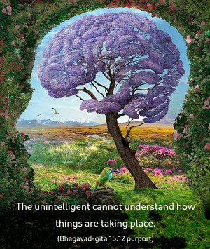
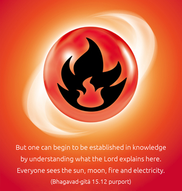
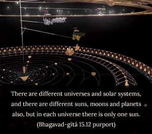
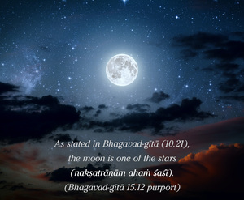

The splendor of the sun, which dissipates the darkness of this whole world, comes from Me. And the splendor of the moon and the splendor of fire are also from Me.




The unintelligent cannot understand how things are taking place. But one can begin to be established in knowledge by understanding what the Lord explains here. Everyone sees the sun, moon, fire and electricity. One should simply try to understand that the splendor of the sun, the splendor of the moon, and the splendor of electricity or fire are coming from the Supreme Personality of Godhead. In such a conception of life, the beginning of Kṛṣṇa consciousness, lies a great deal of advancement for the conditioned soul in this material world. The living entities are essentially the parts and parcels of the Supreme Lord, and He is giving herewith the hint how they can come back to Godhead, back to home.
From this verse we can understand that the sun is illuminating the whole solar system. There are different universes and solar systems, and there are different suns, moons and planets also, but in each universe there is only one sun. As stated in Bhagavad-gītā (10.21), the moon is one of the stars (nakṣatrāṇām ahaṁ śaśī). Sunlight is due to the spiritual effulgence in the spiritual sky of the Supreme Lord. With the rise of the sun, the activities of human beings are set up. They set fire to prepare their foodstuff, they set fire to start the factories, etc. So many things are done with the help of fire. Therefore sunrise, fire and moonlight are so pleasing to the living entities. Without their help no living entity can live. So if one can understand that the light and splendor of the sun, moon and fire are emanating from the Supreme Personality of Godhead, Kṛṣṇa, then one’s Kṛṣṇa consciousness will begin. By the moonshine, all the vegetables are nourished. The moonshine is so pleasing that people can easily understand that they are living by the mercy of the Supreme Personality of Godhead, Kṛṣṇa. Without His mercy there cannot be sun, without His mercy there cannot be moon, and without His mercy there cannot be fire, and without the help of sun, moon and fire, no one can live. These are some thoughts to provoke Kṛṣṇa consciousness in the conditioned soul.